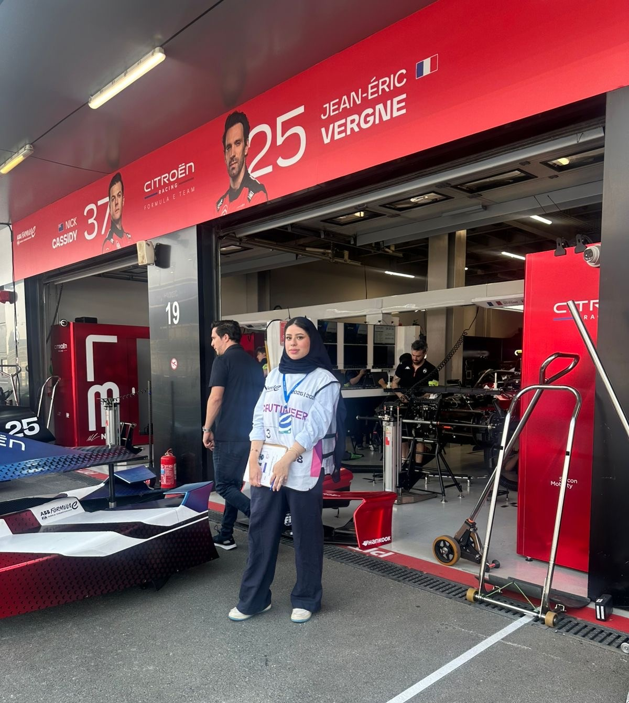
Formula E 2026
Scrutineer Marshal
Returned for the seconed time to Formula E scrutineering work with continued experience in electric race car checks races operations.

Volunteered as a Scrutineer Marshal at major motorsport events across Saudi Arabia, including Formula 1, Formula E, and rally championships. Conducted technical inspections, ensured safety compliance, supported race operations under FIA regulations, and earned three FIA certificates.

Returned for the seconed time to Formula E scrutineering work with continued experience in electric race car checks races operations.
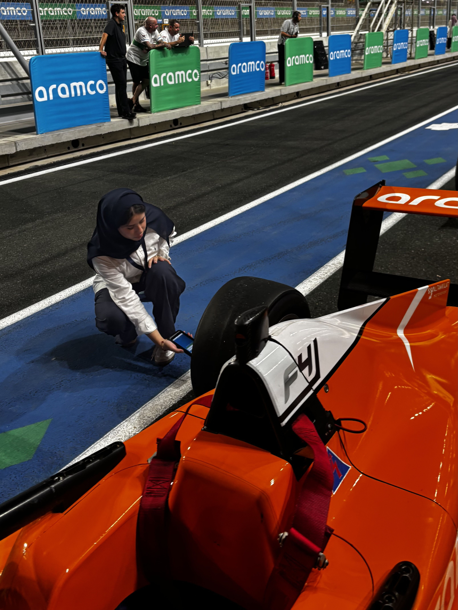
Supported junior drivers race operations and scrutineering checks.
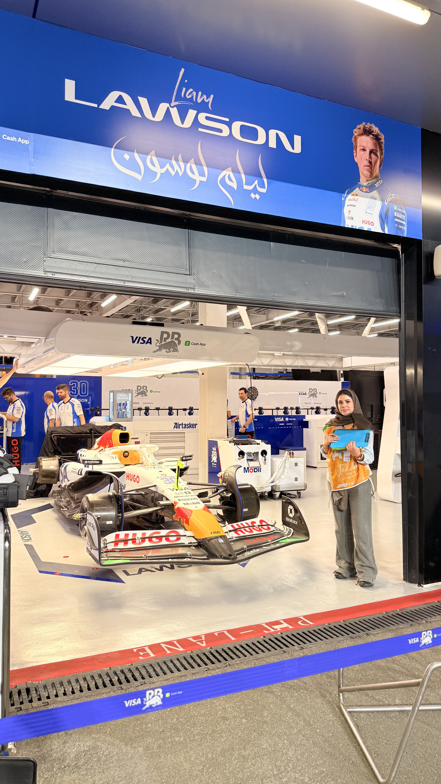
scrutineering in Formula 1 with technical inspections, with visa cash app RB racing Car NO 30.
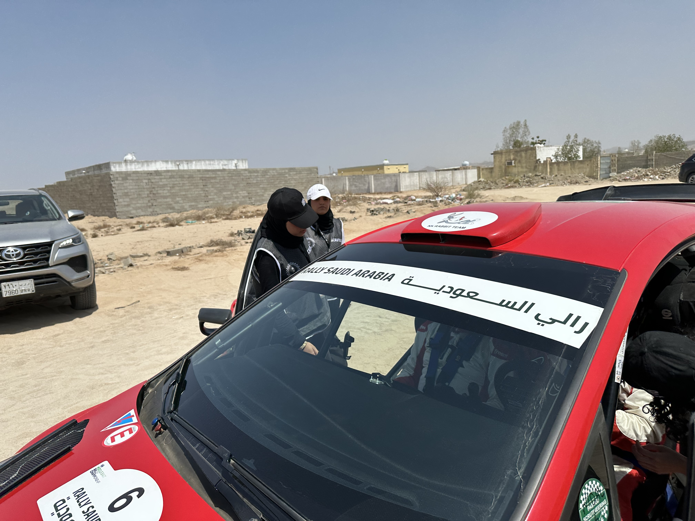
Contributed to rally vehicle inspection and safety verification in an off road motorsport setting with demanding technical conditions.
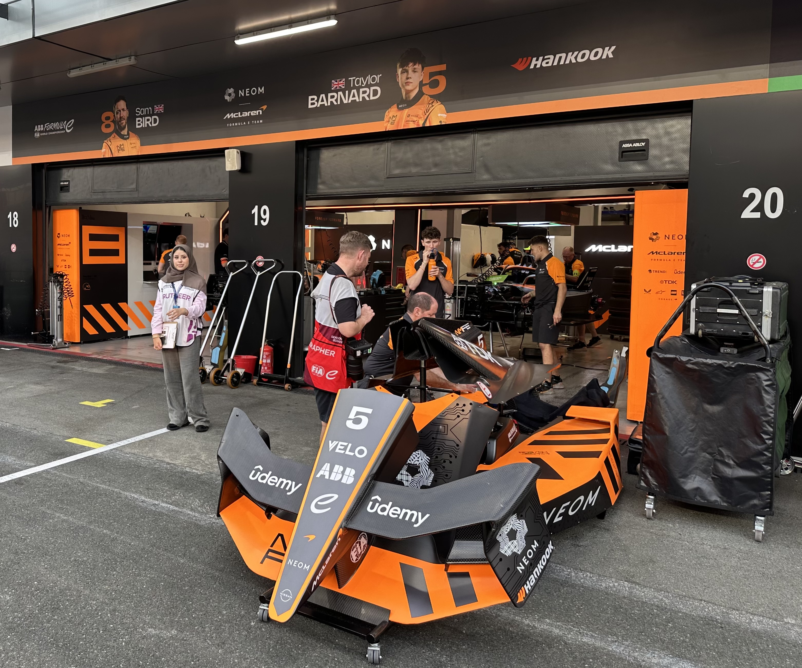
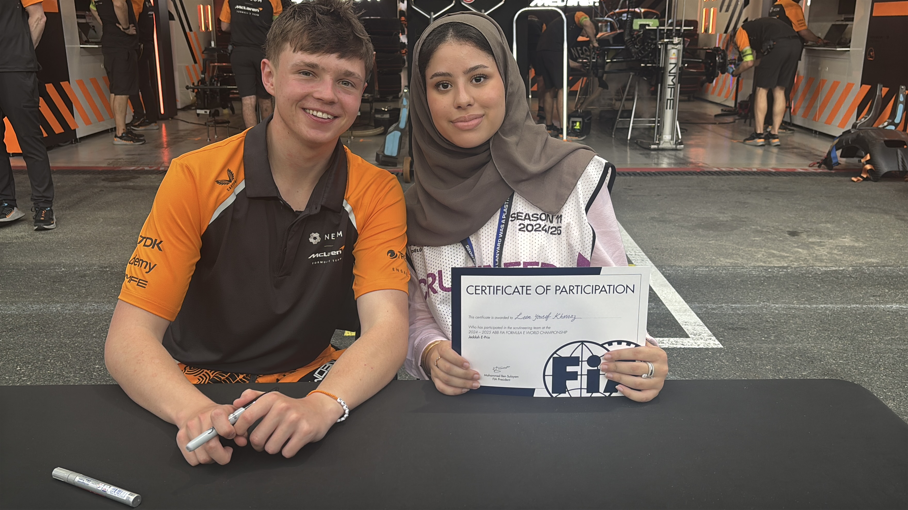
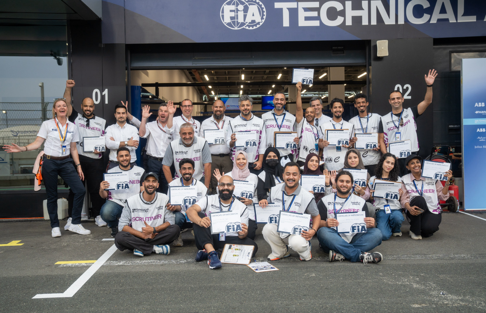
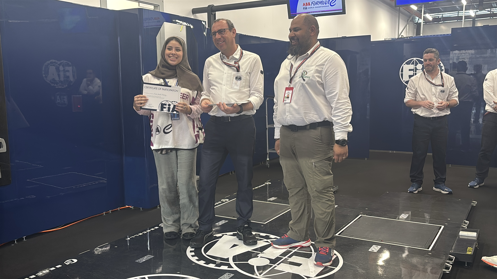
Worked on technical and operational checks for electric race cars with close attention to safety procedures and event readiness.
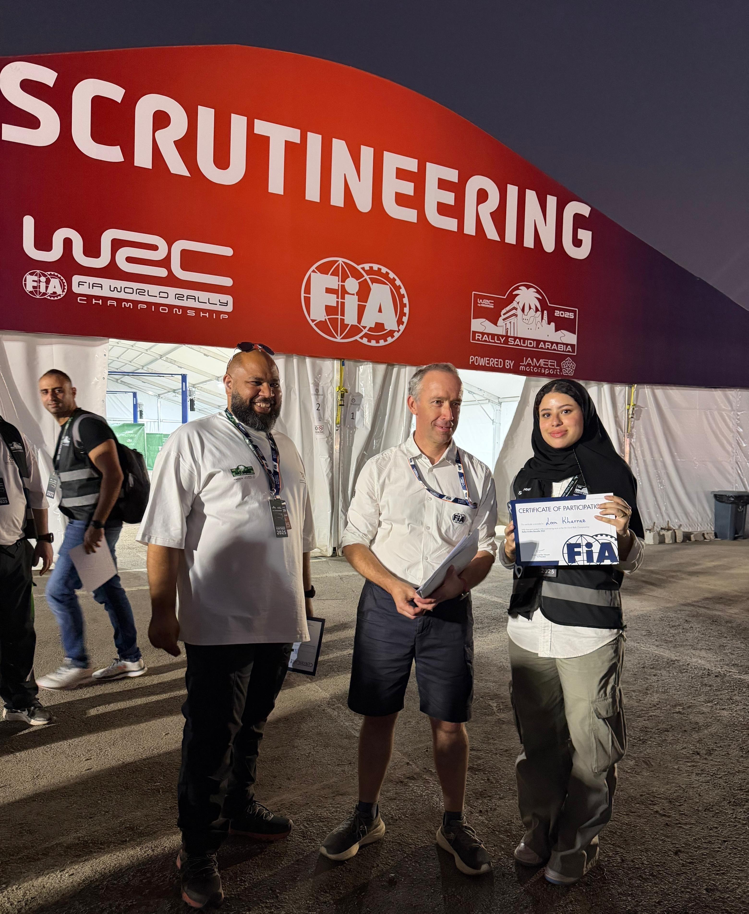
Took part in technical and safety inspection duties for rally vehicles under demanding field conditions across an international rally event.
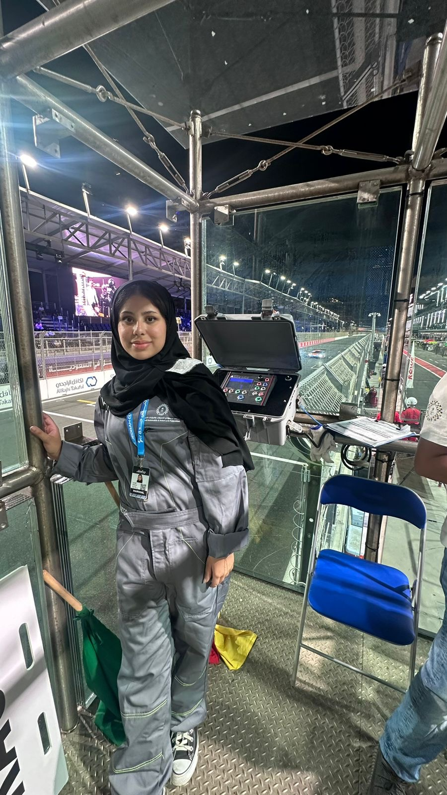
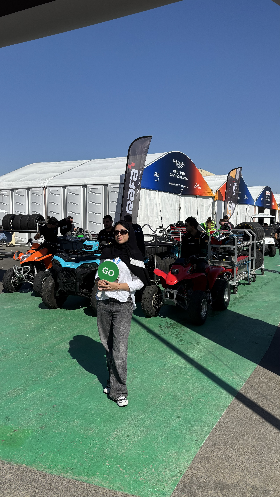
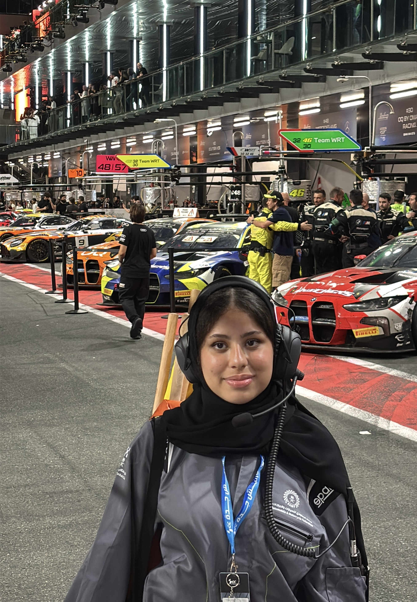
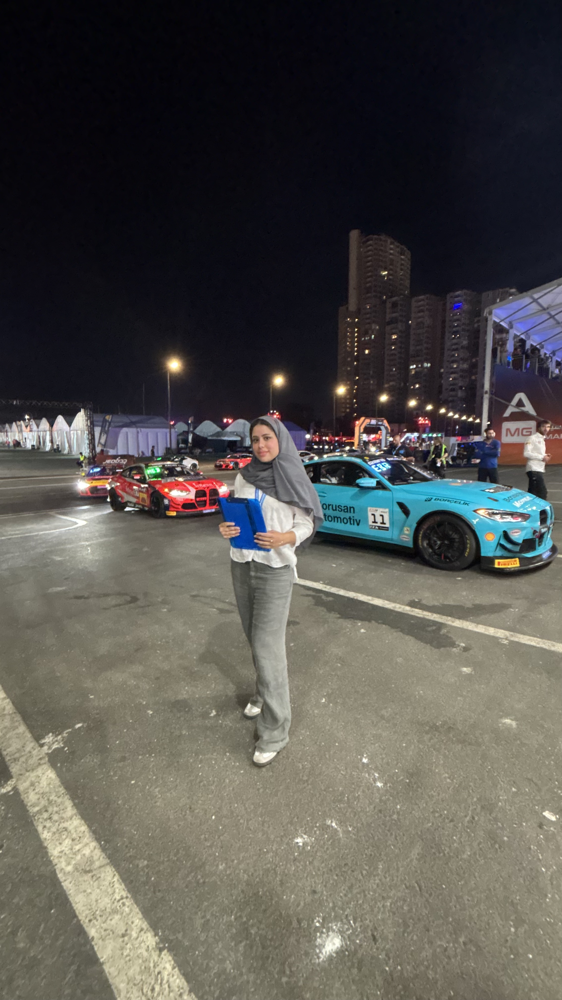
Assisted in race weekend scrutineering and Pit & Grid tasks including vehicle checks and technical support in a high pace international GT racing.
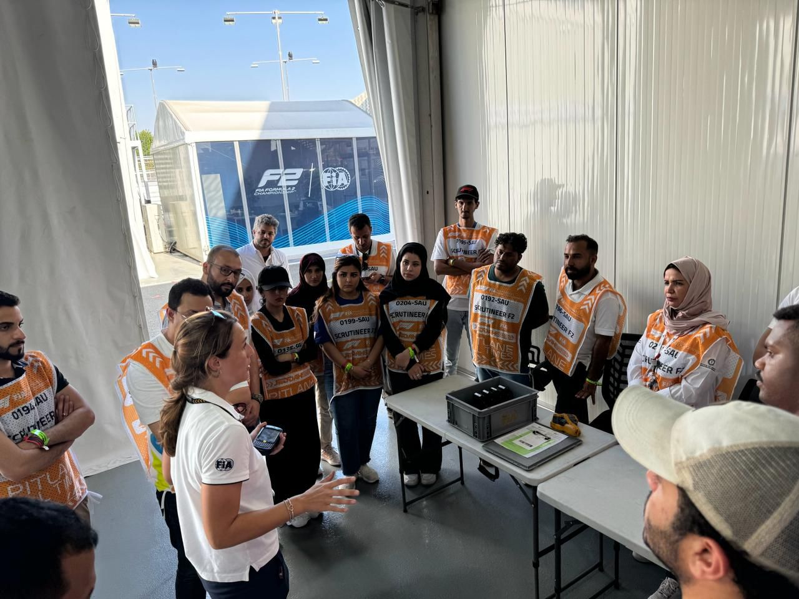
Participated in technical inspection procedures and supported safety compliance operations during the Formula 2 Saudi Arabian Grand Prix in Jeddah.